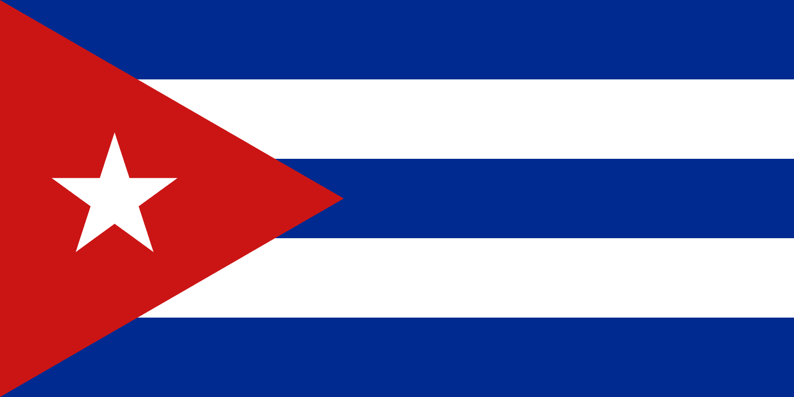

Cuba
Ya sea que busques relajarte en la playa, bailar hasta el amanecer o descubrir su historia, Cuba es un lugar que quedará grabado en tu memoria.
Cuba es un destino fascinante que combina playas paradisíacas, una vibrante vida cultural y un rico legado histórico. Ubicada en el corazón del Caribe, esta isla cautiva a los viajeros con sus paisajes diversos, desde las arenas blancas de Varadero y los cayos hasta las majestuosas montañas de la Sierra Maestra.
La Habana, su capital, es una joya arquitectónica donde los edificios coloniales conviven con los icónicos autos clásicos que parecen congelados en el tiempo. Sus calles rebosan de vida, con música de son y salsa resonando en cada rincón.
El calor humano de los cubanos, su deliciosa gastronomía que mezcla sabores africanos y españoles, y sus costumbres auténticas convierten a esta isla en un destino único.
Datos importantes
Sobre el país
- Nombre oficial: República de Cuba.
- Capital: La Habana.
- Moneda: Peso cubano (CUP).
- Ubicación: Archipiélago situado en el Caribe, entre el Golfo de México y el Océano Atlántico.
- Sistema político: Estado socialista con partido único (Partido Comunista de Cuba).
Razones para conocer Cuba
La Habana Vieja es declarada Patrimonio de la Humanidad por la UNESCO, con calles adoquinadas, coloridos edificios coloniales y una atmósfera única.
Platos como ropa vieja, congrí, yuca con mojo, y deliciosos postres como los buñuelos son un festín para el paladar.
Además, viajar en un auto de la década de 1950 es como retroceder en el tiempo, una experiencia única que sólo Cuba puede ofrecer.
Lugares para conocer
- La Habana Vieja (Patrimonio de la Humanidad).
- Malecón Habanero.
- Plaza de la Revolución.
- Bahía de Cochinos
- Reserva Ecológica Varahicacos.